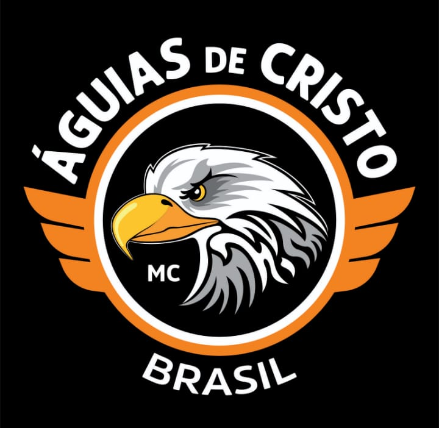
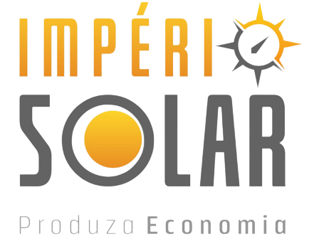

IV Encontro Nacional de Motociclistas de Três Corações - MG
Em 2020 foi um ano difícil jamais visto na atualidade com uma pandemia que deixa o mundo inteiro parado por um período e nos levou a alternativa de fazer o diferente e não deixar de realizar aquilo que a gente mais gosta, encontrar os irmãos mesmo que por meio virtual, e realizamos uma LIVE tentando se aproximar ao máximo das características de um Encontro de Motociclistas. Obedecendo as normas da vigilância sanitária, com pouco público e organizadores levamos aos irmãos a forma transmitida do evento para que em suas casas pudessem assistir e relembrar os momentos de encontro. Sendo assistido até mesmo fora do Brasil, fizemos o cenário próximo ao real com a chegada dos motociclistas, área de camping, locutor e duas bandas sensacionais com o Rock Clássico e o Rock Brasil 80
Assista no youtube:
III Encontro Nacional de Motociclistas de Três Corações - MG
2019 foi o retorno do ENCONTRO NACIONAL DE MOTOCICLISTAS DE TRÊS CORAÇÕES MG com a UNIÃO DE MOTOCICLISTAS E MOTOCLUBES o que é a característica da realização do mesmo. Então foi realizado o 3° Encontro Nacional de Motociclistas de Três Corações MG com a presença da sociedade tricordiana, cidades vizinhas e a honra de ter recebido em nossa Três Corações, motociclista de 4 REGIÕES DO PAÍS, 8 estados, 52 cidades e 107 Motoclubes registrados. 13 incríveis bandas se apresentaram de sexta a domingo com destaque para Queen Cover e Elvis Presley Cover dentre outras de igual qualidade. O local, Parque Dondinho, tem uma excelente estrutura para receber os irmãos estradeiros com um belo espaço, sendo uma vista maravilhosa do parque com um lindo entardecer. A área de eventos é asfaltada oferecendo melhores condições para o estacionamento de motos com segurança e locomoção de pessoas. A extrutura de camping é fantástica com diversos banheiros com chuveiros quentes e sem acesso a motocicleta oferecendo maior descanso aos estradeiros, nesta área pedimos RESPEITO E SILÊNCIO com os que ainda estejam descansando. Nosso evento é feito e pensado em todos, somos dedicados para fazer o melhor pra vocês, temos uma equipe com vários Motoclubes a disposição para receber todas as orientações vinda de vocês que nos ajudam a realizar este evento. Somos sempre gratos pela presença de todos. Em agosto todos os caminhos te trazem a Três Corações, sul de Minas Gerais
II Encontro Nacional de Motociclistas de Três Corações - MG
Em 22 de abril de 2016 novamente moto clubes de Três Corações se uniram para a organização do 2º Encontro de Motociclistas de Três Corações, onde se confraternizaram no Parque Dondinho 267 motos clubes de oito Estados em uma festa com muita música, motos e amigos, fomentando o setor de turismo em nossa cidade, evento este que arrecadou quantidade expressiva de alimentos doados as Instituições de nossa cidade, entre elas APAE, Asilo São Vicente de Paula, Lar Anjo da Guarda.
I Encontro Nacional de Motociclistas de Três Corações - MG
Em 2015, moto clubes e motociclistas de nossa cidade se juntaram para organização do Primeiro Encontro de Motociclistas de Três Corações, com realização da Prefeitura Municipal e organizado pelos moto clubes, evento este que marcou como um dos melhores encontros daquele ano do sul de Minas Gerais e colocou a cidade de Três Corações no roteiro de eventos motociclisticos. A opinião positiva de todos visitantes foi unanime sobre a grandiosidade e hospitalidade do evento e o comercio teve grande retorno com toda movimentação da cidade. Para entrada no evento foi solicitada a doação de 2 kg de alimento para posteriormente distribuirmos por entidades de Três Corações , Asilo SSPV e Abrigo Anjo da Guarda arrecadamos mais de 500 kg de alimentos.
Realização:
União de Motociclistas e motoclubes de Três Corações, sul de Minas Gerais.

.jpg)
- 

Patrocínio:

- 